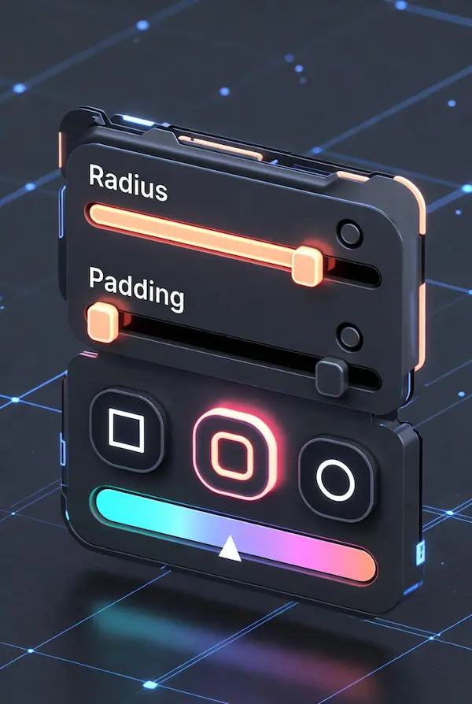

Favicon X Ultra Pro
Securely Generate SEO-Ready Favicons, Android Manifests & Apple Touch Icons. Visualize in Google Search Results instantly.
SEO Health Check
Analyzing icon quality...
Google Mobile Search Preview
Generated Assets Preview
<!-- HTML Code will appear here -->
Why Favicon SEO Matters in 2026
A Favicon (short for "favorite icon") is the visual anchor of your website's brand identity. In 2026, its role has expanded beyond just the browser tab. Google now prominently displays favicons in mobile and desktop search results (SERPs).
The Impact on SEO: While the favicon file itself isn't a direct ranking factor, it significantly influences User Experience (UX) and Click-Through Rate (CTR). A crisp, high-contrast icon attracts the eye, instills trust, and can increase traffic by up to 20% compared to a default globe icon.
Favicon X Ultra Pro generates the complete suite of required files,
including high-res PNGs for modern browsers, the legacy .ico format
for IE compatibility, and the critical site.webmanifest for Android
PWA (Progressive Web App) installation.
How to Design a Professional Icon
Select Source & Input
Upload a high-res logo (PNG/SVG recommended), type your brand initials, or pick an emoji. Our vector engine scales it perfectly to 512×512px.

Fine-Tune & Visualize
Use the Shape (Circle/Square) and Background controls. Check the "Google Preview" card to ensure your icon pops against both Light and Dark mode backgrounds.
Download Ultra Pack
Click Download Ultra Pack. You get a ZIP containing
optimized PNGs (16×16 to 512×512), a binary favicon.ico,
and the site.webmanifest file.
Privacy & Security: Client-Side Technology
Security is paramount. Unlike other online converters that upload your files to a remote server for processing, Favicon X Ultra Pro runs 100% within your web browser using HTML5 Canvas and the FileReader API. Your images never leave your device, ensuring total privacy for sensitive brand assets or unreleased logos.
Initializing secure discussion portal...